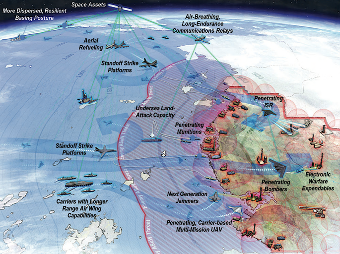
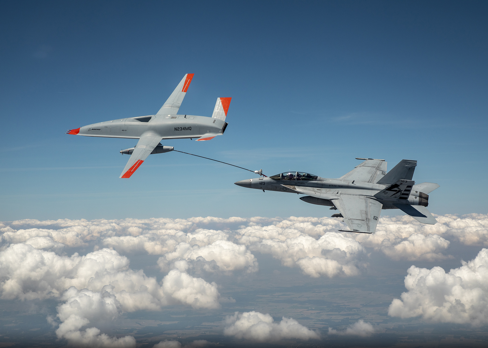
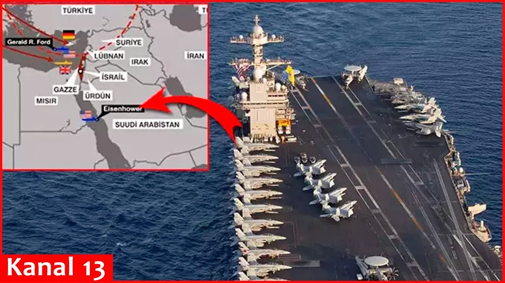
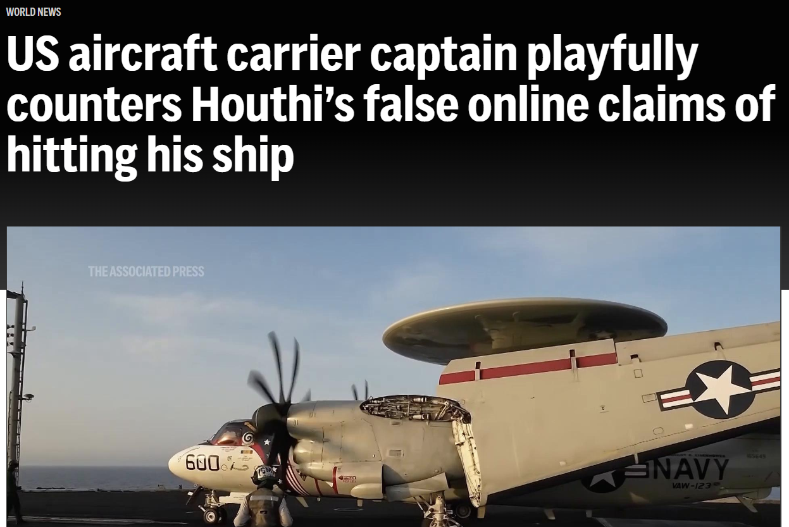
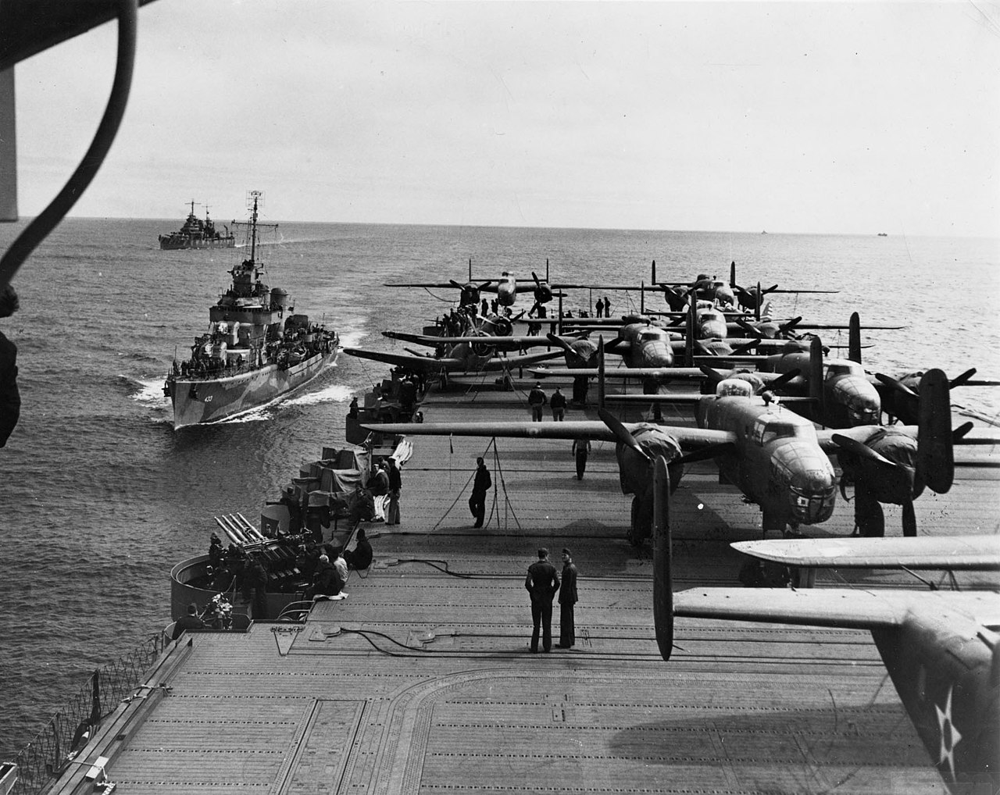
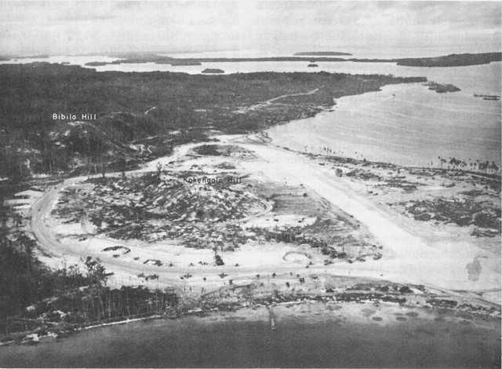
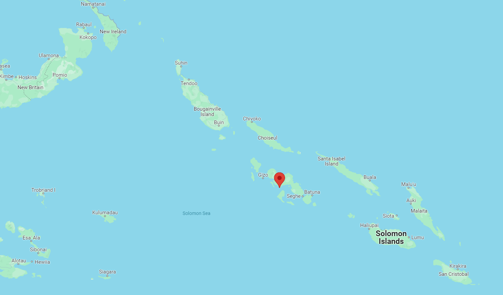
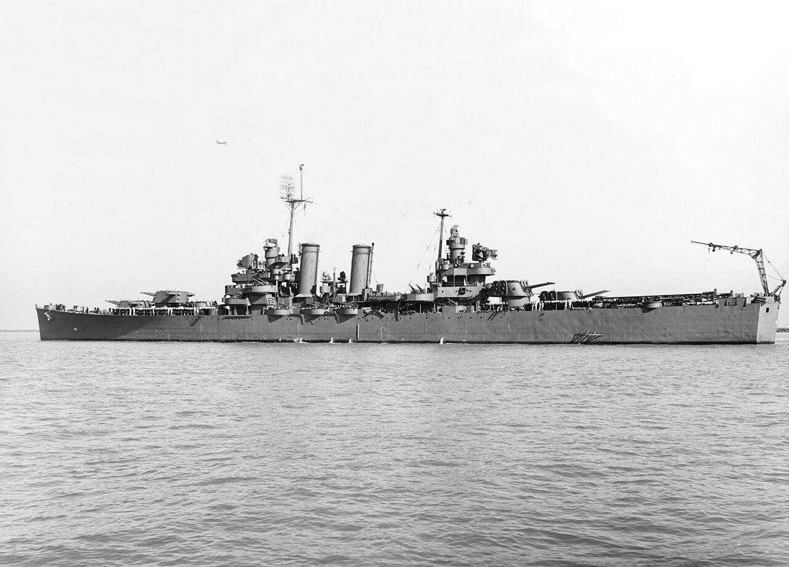
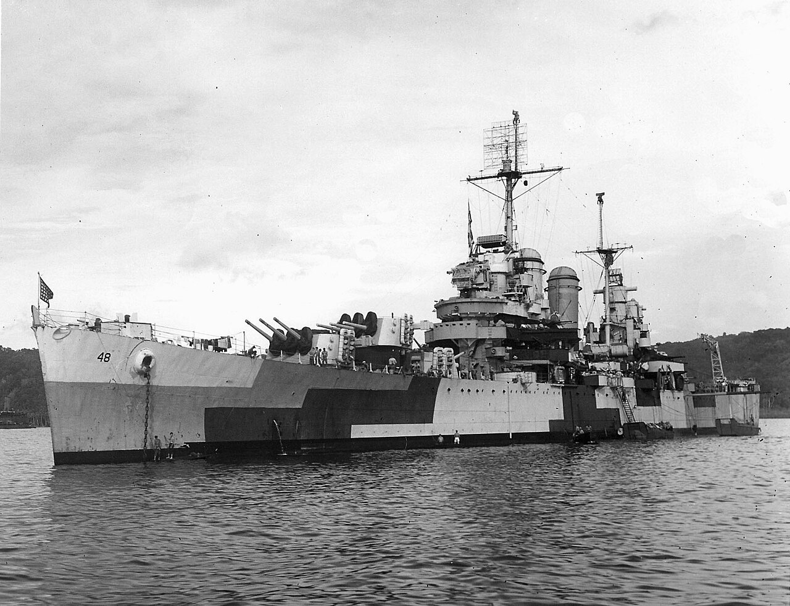
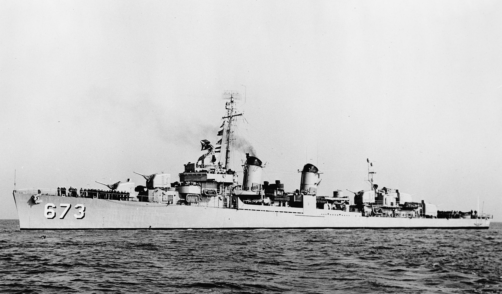

무선 침묵 이야기 (1) - 항모에서 순양함과 구축함으로
게시: 2024-07-25T06:30:50+09:00
<항모 그렇게 쓰는 거 아냐> 흔히 현대적인 미해군 항모전단 하나는 어지간한 국가의 공군력 전체와 상대해도 완승을 거둔다고들 하지만 그건 그냥 하는 소리일 뿐이고, 실제로 항모가 적 공군기지 근처에 접근하는 일은 없다고 봐도 무방. 짧은 비행갑판에서 이착함해야 하는 제약조건이 주어진 함재기는, 그런 조건 없이 연료와 폭장량을 한도까지 마음껏 실을 수 있는 지상발진 전폭기에 비하면 아무래도 성능과 작전 반경에서 불리하기 때문. 게다가 지상 공군기지에 폭탄 몇 방 명중했다고 그 공군기지 전체가 사용불능이 되는 경우는 많지 않지만, 좁은 공간에 항공유 탱크와 탄약고, 복잡하고도 예민한 각종 전자장비 등을 구겨 넣은 항모에는 폭탄이 한두 방만 명중해도 작전 불능 상태에 빠질 수 있음. 항모의 유용함은 원하는 시간과 장소에 항공전력을 투사하는 것이지 언제 어디서고 천하무적의 힘을 내는 것이 아님. 중국이 미해군 항모전단에 대해 쓰고 있는 A2/AD (ANTI-ACCESS/AREA-DENIAL) 전략이라는 것도 바로 그런 점을 이용하는 것.

(말이 쉬워서 장거리 대함탄도탄으로 A2/AD를 달성할 수 있다지만, 실제로 중국이 저 먼 바다 어딘가에 숨어 있고 30노트의 속력으로 계속 움직이는 미해군 항모를 탐지하고 조준하는 것은 쉽지 않은 일. 위성과 정찰기구, 정찰기와 잠수함, 드론, 간첩선 등등을 다 활용해야 하고, 실전에서 그게 제대로 작동할지는 아무도 모름.)

(아무도 모르니까 미해군으로서도 뭔가 대응을 하긴 해야 하는데, 가장 쉽고도 본질적인 대응은 중국 근해에 진입하지 않고 원거리에서 타격하는 것. 그러자면 함재기의 작전반경을 함재급유기로 대폭 늘려줘야 하는데... A-3 Skywarrior 퇴역 이후 미해군에게는 현재 함재급유기가 없음. 그래서 미해군이 급유용 함재 드론인 MQ-25 Stingray 개발 및 취역을 서두르는 것.)

(최근 홍해에서 상선들을 공격하는 후티 반군의 드론과 순항미쓸 등의 격추를 위해 USS Eisenhower가 홍해 안에서 몇 개월 동안이나 작전을 하기는 했으나, 이는 매우 예외적인 경우. 그나마 아이젠하워가 1975년 진수된, 미해군에서 2번째로 낡은 항모라서 거기에 집어 넣었다는 느낌적 느낌이 듬.)

(당연히 후티 반군은 이왕 공격하는 거 화물선 말고 근사한 미해군 니미츠급 항모를 공격하려고 했을 텐데, 실제로 3차례 정도 아이젠하워 타격에 성공했다고 발표. 물론 모두 사실이 아니었음. 홍해가 좁은 바다라지만 길이가 2,250 km이고 가장 넓은 곳의 폭이 355 km에 달하여, 항모의 정확한 위치를 실시간으로 파악하여 대함 미쓸에 입력하는 것은 쉽지 않음.) 그런 사정은 WW2 당시도 마찬가지. 대표적인 것이 1942년 4월, USS Hornet에서 B-25 폭격기들을 기습적으로 띄워 도꾜를 폭격했던 둘리틀 폭격대 (Doolittle Raid) 사건. 당시 B-25 16대를 싣고 간 USS Hornet과 그 호위 역할을 했던 USS Enterprise는 일본군에게 들키지 않으려 온갖 애를 썼고, 폭격기들을 날리자마자 뒤도 안 돌아보고 줄행랑.

(비행갑판 위에 B-25를 실은 상태인 USS Hornet. 이 사건 이후 USS Hornet은 일본해군이 반드시 격침시켜 '무엄하게도 천황폐하가 계신 동경을 폭격한' 것에 대한 복수를 해야 하는 철천지 원수 항모가 되었음. 산타 크루즈 해전에 USS Hornet은 참전하지도 않았는데 일본해군은 그 해전에서 호넷을 격침시켜 원수를 갚았다고 일본국민에게 발표하기도 했음.) 1942년 하반기, 과달카달을 비롯한 솔로몬해 일대의 해전에서 미해군은 상륙부대 및 후속 수송단 엄호를 위해 항모전단을 섬 근처에 바싹 갖다 대고 작전. 이는 필연적으로 그 일대에 존재하는 일본군 항공기지에서 발진하는 지상발진 폭격기들의 작전 범위 안에 항모를 밀어넣는 결과를 냄. 이는 모든 항모 지휘관들이 기겁을 할 이야기. 당시 USS Enterprise의 함장은 보고서에 이렇게 기록. "지난 한 달간의 전략적 상황 때문에 항모전단이 적 항공기지의 작전 거리 안에 들어있는 좁은 해역에서 지속적인 작전을 해야만 했다. 이런 위험 부담은 가능한한 최소화해야 한다." <항모에서 순양함으로, 다시 구축함으로> 과달카날 일대에서 미해군 항모전단이 위험할 정도로 적 항공기지 가까운 곳에서 작전을 펼쳤던 것은 항공 지원을 해줄 것이 그것 밖에 없었기 때문. 그런데 덕분에 1942년 하반기 과달카날의 헨더슨 기지가 완공되면서, 거기서 이륙하는 미해병대의 F4F Wildcat이나 F4U Corsair 등이 항공지원을 해주기 시작하면서 굳이 항모가 그 일대에 존재할 필요가 없어짐. 그러나 문제는 여전히 남아 있었던 것이, 전투기들이 하늘에 떠있다고 전부가 아니었음. 누군가 레이더 스코프를 보면서 적기를 향해 그 전투기들을 유도해주어야 하는데, 여태까지는 항공모함의 FDO (Fighter Direction Officer)들이 해주었는데, 항모들이 떠나면 그걸 누가 해주느냐 하는 것. 여기서 지상 항공기지와 항모의 차이가 잘 드러나는데, 항공기지에도 SCR-268, SCR-270 등의 레이더가 있었지만, 이것들은 헨더슨 기지 방어에나 도움이 될 뿐 헨더슨 기지에서 이륙한 전투기들이 수백 km 밖의 일본군을 공격하는 미해군 수상함들을 엄호할 때는 도움이 하나도 안 되었던 것. 당장 1942년 12월, 과달카날 섬에서 약 360km 떨어진 New Georgia 섬의 Munda라는 해변 마을에 일본군이 몰래 작은 항공기지를 만들어 놓은 것이 발견됨. 당장 헨더슨 기지에서 출격한 B-17들이 그 기지에 폭격을 가하는 등 문다 기지를 무력화시키려는 노력이 계속 되었지만, 항공 폭격만으로는 완전 제압이 안 되므로 결국 상륙부대를 보내 점령하기로 함. 그 상륙부대에 대한 공중 엄호는 과달카날에서 출격하는 전투기들이 하면 되는데, 그들에 대해 레이더로 관제를 해줄 수상함이 필요.

(1943년 Munda Point의 활주로 모습)

(Munda Point는 헨더슨 기지로부터 약 360km 떨어진 곳.)
이 문제는 항모나 전함에 설치되었던 CXAM 레이더 무게의 절반도 안 되면서도 최대 160km 밖의 항공기도 포착해내는 SK-1 레이더를 장착한 순양함에서 CAP (Combat Air Patrol) 관제를 하기로 하면서 해결. 당장 1943년 1월의 문다 공격에는 경순양함 USS Nashville이 이 역할을 수행. 그러나 순양함의 레이더 관제사는 그냥 적기 내습을 미리 포착하는 기술만 있을 뿐, 아군 전투기를 지휘하는 훈련은 전혀 되어 있지 않았던 상태. 따라서 그런 관제사 팀은 과달카날 헨더슨 기지에서 그 역할을 하던 팀을 급히 태워서 해결.

(USS Nashville (CL-43, 1만2천톤, 32.5노트)의 1943년 모습. 마스트 꼭대기에 뭔가 갈퀴 같은 것이 매달린 것이 보이는데 그것이 SK-1 레이더. 종전 때까지 살아남아 1946년 퇴역했고, 1951년 칠레 해군으로 팔려가 거기서 1982년까지 Capitan Prat 호라는 이름으로 복무.)

(내쉬빌과 동일한 Brooklyn-class 경순양함인 USS Honolulu (CL-48). 마스트에 매달린 SK-1 레이더가 잘 보임. 항모에 달려있던 CXAM radar의 안테나와 전기 장치 등은 총 2.3톤에 가까왔는데, SK-1 레이더는 1.1톤에 불과.) 아무래도 항모의 진짜 전투기 관제사(FDO)들에 비해 해병대의 관제사들 경험과 기술이 떨어진다는 문제도 있었으나, 문제는 거기서 그치지 않았음. 본격적으로 그 일대의 섬들에 대한 장악에 나선 미해군에게는 그런 순양함들의 6인치 (152mm) 함포가 여러 곳의 해안 포격 임무에 필요했던 것. 그렇게 순양함도 다른 임무에 빼앗기자, 결국 이 관제사들은 구축함으로 옮겨타게 됨. 어느덧 구축함에도 SC-1 radar가 장착되었고, 1930년대에 건조된 브룩클린급 순양함에 비해 1942년부터 취역한 Fletcher급 구축함들에게는 아예 처음부터 레이더 관제사들을 위한 CIC (Combat Information Center)가 설치되어 나왔기 때문. 그러나 그렇게 순양함에서 구축함으로 옮겨탄 전투기 관제사(FDO)팀의 고난은 더 심해졌는데, 아무래도 원래 좁은데다 그런 전투기 관제팀까지 태울 공간은 고려되지 않았던 구축함에서 일종의 불청객이었던 전투기 관제사들은, 근무할 때는 CIC에서 제대로 일할 수 있었으나, 숙소가 주어지지 않아 장교 식당, 심지어는 통로에 담요를 깔고 자야 했다고.

(플렛처급 구축함인 USS Hickox (DD-673, 2천톤, 38노트). 히칵스는 1957년 미해군에서 퇴역한 이후 mothball 처리되었다가 1968년 한국 해군에 이양되어 '부산함'으로 1989년까지 복무.) 하지만 이렇게 나름 잘 돌아가고 있다고 생각했던 순양함과 구축함의 전투기 관제 임무는 1943년 1월 말 의외의 난관에 부딪히게 되는데... (다음 주 계속)